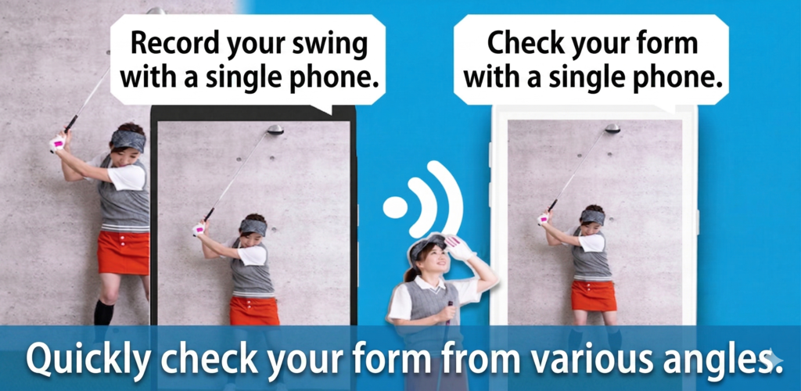

Werkt tussen verschillende besturingssystemen
Gebruik een iPhone als camera en een Android-telefoon als monitor, of wissel de rollen om. De app is ontworpen voor gemengde apparaten.
Platformonafhankelijke draadloze video-overdracht
Wireless Delay Cam verbindt camera- en weergaveapparaten tussen iOS en Android. Verstuur live video draadloos op hetzelfde Wi-Fi-netwerk of via tethering, en koppel apparaten snel met automatische detectie of een QR-code.



Functies
Gebruik een iPhone als camera en een Android-telefoon als monitor, of wissel de rollen om. De app is ontworpen voor gemengde apparaten.
Een router is niet nodig. Als een apparaat een gedeeld netwerk maakt, kunnen camera en scherm deelnemen en direct streamen.
Het weergaveapparaat kan automatisch op hetzelfde netwerk worden gevonden, waardoor de voorbereiding sneller gaat.
Scan de QR-code van het weergaveapparaat vanaf de camera om te verbinden zonder handmatig netwerkgegevens in te voeren.
Stel de latentie aan de ontvangende kant in wanneer je vertraagde monitoring, vergelijkingen of presentatie-effecten nodig hebt.
De ontvanger ondersteunt zoom, spiegelweergave en opname. De zender kan de stream ook opslaan wanneer nodig.
Werking
Start een apparaat als camera en het andere als weergave-eenheid.
Gebruik automatische detectie op hetzelfde Wi-Fi-netwerk of koppel direct met een QR-code.
Pas latentie, bitrate en orientatie aan op het scherm zodat het resultaat past bij je gebruik.
Bekijk de inkomende video en gebruik opname of zoom wanneer dat nodig is.
Schermen


Gebruik
Neem op met het ene apparaat en controleer het beeld op het andere, ook wanneer ze verschillende besturingssystemen gebruiken.
Voeg bewust latentie toe om bewegingen te vergelijken, demonstraties te geven of visuele effecten te maken.
Bouw een lichte monitoringsetup zonder speciale hardware wanneer er zowel iOS- als Android-apparaten aanwezig zijn.
FAQ
Geen externe internetverbinding is nodig zolang beide apparaten elkaar kunnen zien op hetzelfde Wi-Fi- of tetheringnetwerk.
Nee. De app ondersteunt zowel automatische detectie als koppeling via QR-code, zodat je de snelste optie kunt kiezen.
Ja. De app is ontworpen voor platformonafhankelijke combinaties waarbij zender en ontvanger op verschillende mobiele systemen draaien.
Ja. Zowel de zender als de ontvanger hebben opties om de stream op te slaan wanneer nodig.